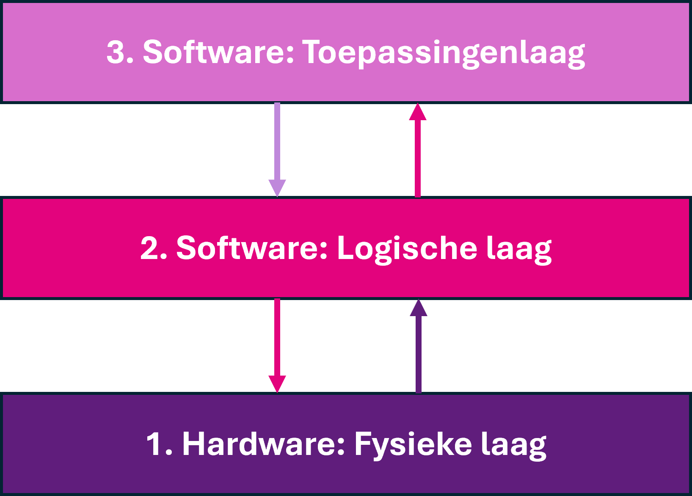

Computers zijn er in allerlei soorten. Denk aan desktops en laptops, maar ook tablets en smartphones zijn computers. Laten we eens inzoomen op een smartphone: Het belangrijkste op je smartphone vind jij misschien de apps. Maar behalve deze software zit een smartphone boordevol hardware: de camera, het scherm, geheugen, een processor en allerlei chips voor de communicatie.
Verschillende apps op een smartphone maken gebruik van bijvoorbeeld de camera. Maar zo’n app gebruikt de camera niet rechtstreeks. Alleen het besturingssysteem (Android of iOS) kan de camera aansturen. Apps gebruiken de camera dus via het besturingssysteem.
Er zijn ook digitale apparaten met heel andere soorten hard- en software. Denk bijvoorbeeld aan de computers in een auto, op de terminal van een vliegveld, toegangspoortjes in het OV, zelfscankassa’s, brandmelders en verkeerslichten. Ondanks dat die apparaten heel verschillend zijn, is er een overeenkomst in de manier waarop de hardware en software van die apparaten met elkaar samenwerken.
Hoe zorg je er nu voor dat al die verschillende soorten hard- en software goed met elkaar samenwerken? Het trucje is om die samenwerking te structureren in drie zogenoemde ‘lagen’. Elke laag heeft een eigen taak. Je zult leren dat dit heel veel voordelen heeft.

Het drielagenmodel
In laag 1 zit de hardware. Deze laag noemen we de fysieke laag. De apps – oftewel toepassingen – die jij als gebruiker op je computer of smartphone gebruikt, bevinden zich in laag 3. Die laag noemen we daarom de toepassingenlaag. Om met elkaar te kunnen communiceren, zit er een laag tussen de fysieke laag en de toepassingenlaag: de logische laag. Hier bevindt zich het besturingssysteem.
We gaan later dieper in op elke laag en wat daarin gebeurt. Voor nu is het voldoende dat je weet dat deze drie lagen er zijn.